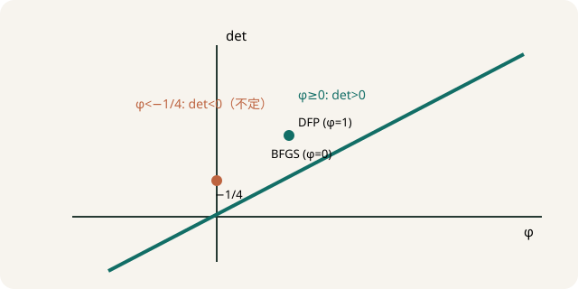

6.3 Broyden 族：连接 BFGS 与 DFP 的一参数更新
BFGS 与 DFP 不是两个孤立的公式，而是一族秩二更新的两个端点。引入参数 φ 后，两者的正组合保持正定，而参数的取值又决定了近似矩阵的条件数，从而影响收敛速度。
从两个更新到一族更新
6.1.1 给出了 BFGS 与 DFP 的秩二更新，它们互为对偶，都满足割线方程 Bₖ₊₁sₖ=yₖ。关键观察是：割线方程对 B 是线性的——若 B⁽¹⁾ 与 B⁽²⁾ 都满足 Bs=y，则任意凸组合 (1−φ)B⁽¹⁾+φB⁽²⁾ 也满足割线方程。因此把 BFGS 与 DFP 按参数 φ 混合，得到的仍然是一个合法的拟牛顿更新。
这解释了两者为何不是“二选一”：它们只是同一个一参数族的两个端点。这个族被称为 Broyden 族，是满足对称与割线约束的秩二更新中最广为人知的一类。
Broyden 族的定义
用凸组合定义：
等价地，可以把它写成一个从 Bₖ 出发的单一秩二更新，显式地暴露参数 φ：
其中
φ=0 时最后一项消失，回到 BFGS；φ=1 时得到 DFP。注意 vₖᵀsₖ=(yₖᵀsₖ)/(yₖᵀsₖ)−(sₖᵀBₖsₖ)/(sₖᵀBₖsₖ)=0，所以含 φ 的那一项对割线方程没有贡献——无论 φ 取多少，更新都满足割线方程。这正是“割线约束对 B 线性”的代数体现。
正定性参数区间
若 Bₖ 对称正定且 sₖᵀyₖ>0，则 BFGS 与 DFP 更新都正定。当 φ∈[0,1] 时，Bₖ₊₁^φ 是两个正定矩阵的凸组合，因此仍然正定。
当 φ<0 时，凸组合变成“外推”，最后一项的负贡献可能把最小的特征值拉过零，矩阵变成不定。具体例子：B₀=I、s=(1,0)、y=(1,2)，则 det B₁^φ=1+4φ；所以 φ>−1/4 时正定，φ=−1/4 时奇异，φ<−1/4 时不定。φ>1 也会失去凸组合结构，但没有 φ<0 那么直接。
结论：保持正定的安全参数区间是 φ∈[0,1]；在线搜索框架下通常只在这个闭区间内取值。
自适应参数与超线性收敛
既然正定的 φ 有一整段可选，就可以用它改善 Bₖ₊₁ 的条件数。Bₖ₊₁ 的两个特征值随 φ 单调变化，因此可以解出一个闭式的 φₖ，使条件数在可行区间内最小；这个值不需要额外的函数或梯度评估就能算出。原书将此称为 Broyden 族的“最优条件”选取。
在这一选取下，配合精确线搜索与适当假设，可以证明方法具有局部超线性收敛性。需要注意：这是关于特定参数策略的收敛结论，不能反过来声称“任意 φ 的 Broyden 更新都超线性”。
与 SR1 的关系：SR1 是秩一更新，不属于这个秩二族；但 Boyd 类包含的更新都满足割线方程，SR1 也满足——区别在于 SR1 以单个秩一项同时耗费更少、又能表示不定性，因此它在信赖域框架中另有位置（6.2 节）。
二维可复现算例
取 B₀=I、s=(1,0)、y=(1,2)。把 φ 代入 Broyden 显式形式可得
于是：φ=0（BFGS）得 B₁=[[1,2],[2,5]]、det=1；φ=0.5 得 [[1,2],[2,7]]、det=3；φ=1（DFP）得 [[1,2],[2,9]]、det=5；而 φ=−1 得 [[1,2],[2,1]]、det=−3<0，不定。
这组数据说明两点：一是 φ∈[0,1] 内正定性如何被参数调节（det 从 1 变到 5，进而改变条件数）；二是越出区间后凹面被打开，正定性确实会丧失。所有结果由本页 Python 程序独立运行并断言。
φ 数轴：本页算例中 φ∈[0,1] 对应 BFGS 到 DFP 的凸组合，保持正定；φ<0 越出安全区间。

交互：拖动参数 φ
固定 B₀=I、s=(1,0)、y=(1,2)，拖动滑块改变 φ。观察 det B₁=1+4φ 的符号与矩阵的定性；φ=−1/4 附近行列式过零，矩阵趋于奇异。
实时模型计算
Python：Broyden 族更新与正定性
程序只依赖标准库，实现 Broyden 族显式公式，验证 φ∈[0,1] 时正定、φ=−1 时不定，并断言所有 φ 都满足割线方程。
"""Broyden-class Hessian update and the positive definiteness interval."""
def dot(u, v):
return u[0]*v[0] + u[1]*v[1]
def mv(B, v):
return [B[0][0]*v[0] + B[0][1]*v[1], B[1][0]*v[0] + B[1][1]*v[1]]
def broyden(B, s, y, phi):
Bs = mv(B, s); sBs = dot(s, Bs); ys = dot(y, s)
v = [y[i]/ys - Bs[i]/sBs for i in range(2)]
return [[B[i][j] - Bs[i]*Bs[j]/sBs + y[i]*y[j]/ys + phi*sBs*v[i]*v[j]
for j in range(2)] for i in range(2)]
def det(B):
return B[0][0]*B[1][1] - B[0][1]*B[1][0]
if __name__ == "__main__":
B0, s, y = [[1.0, 0.0], [0.0, 1.0]], (1.0, 0.0), (1.0, 2.0)
for phi in (0.0, 0.5, 1.0, -1.0):
B1 = broyden(B0, s, y, phi)
assert abs(B1[0][0]*s[0] + B1[0][1]*s[1] - y[0]) < 1e-12 # secant, any phi
for phi in (0.0, 0.5, 1.0):
assert det(broyden(B0, s, y, phi)) > 0 # positive definite
assert abs(det(broyden(B0, s, y, -1.0)) + 3.0) < 1e-12 # indefinite
print("det at phi=0,0.5,1,-1:",
[round(det(broyden(B0, s, y, p)), 3) for p in (0.0, 0.5, 1.0, -1.0)])程序只处理一个固定二维例子，用行列式判断定性；它不实现 φ 的自适应选取，也不处理 n>2 或分母退化。